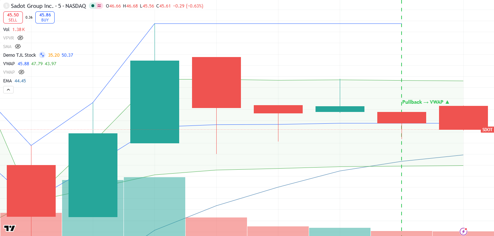
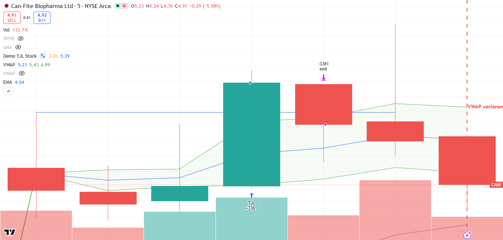

📊 Trading Control
OpenUpdated 2026-07-01 10:31 ET · auto-refresh 2 min
🖥️ Watchboard
Alle movers in één oogopslag. Markt: SPY -0.06% · gemengd
🟢 Pullback SOC >VWAP · small
🔴 Fade-short TC <VWAP · small · JEM <VWAP · EHGO <VWAP · small · CANF <VWAP · small
⚪ Neutraal SDOT >VWAP · small
📚 Hoe lees ik dit?
Dit dashboard signaleert kansen die het automatisch scant — geen koopadviezen. Het is gebouwd rond de strategieën van HumbledTrader (uit haar eigen video's):
📈 Haar strategieën in het kort
- Gap & Go (long) — een small/mid-cap die op vers nieuws gapt. Ze koopt de pullback naar VWAP die houdt (de dip), niet de breakout. Instaptypes: break van de premarket-piek op een terugtest, 1e/2e pullback (bull-flag bij VWAP), red-to-green (ochtenddip die terugkeert naar groen).
- Fade (short) — een grote gap die faalt en VWAP verliest ('fails VWAP → wegwezen'). Het tegenovergestelde spel op dezelfde gapper.
- Vuistregels — alleen de eerste ~1–2 uur na de opening; max 1–2 setups/dag; vermijd overextended (>15% premarket gelopen); stop ~4%, neem winst in stukjes, 'breakout or bail' (loopt het niet door → eruit).
Hoe de kaarten daarop aansluiten:
- Gap screener — wat gapt er vandaag op nieuws (de jachtgrond), met cap-klasse.
- VWAP-watch — vertaalt dat live: VWAP-pullback = haar instap (koop de dip); Long (extended) = op de top (najagen = risico); fade-short = gap die VWAP verloor. Met SPY-marktcontext (rugwind/tegenwind).
- Momentum-setups (TJL) — vaste tickers; groen 'setup actief' = alle voorwaarden kloppen nú.
Wat traders hier doorgaans mee doen (educatief):
- De lijst als watchlist gebruiken en een koersalert zetten i.p.v. meteen handelen.
- Op bevestiging wachten — een gap die al ver gelopen is, niet achternajagen.
- Eerst op papier oefenen (paper trading) om het ritme te leren zonder risico.
- Vooraf bepalen hoeveel je bereid bent te verliezen per idee.
⚠️ Educatief, geen financieel advies. Handelen brengt risico op verlies met zich mee.
📈 Gap screener
Aandelen die vóór de opening al flink bewegen t.o.v. de slotkoers van gisteren. Grote sprong + hoog volume = ongewone activiteit, vaak door nieuws.
20 kandidaten · gap≥4.0%
| Sym | Gap | RVol | Grootte | Reden/nieuws |
|---|---|---|---|---|
| TC | +177.84% | 1476.39x | $0.01B small | Wall Street Set to Open Lower in Wednesday Trading; Key Empl |
| ↳ Grote sprong omhoog, ongewoon druk (1476.39× normaal) — sterke, meestal nieuwsgedreven beweging. | ||||
| JEM | +115.87% | 50.68x | - | 707 Cayman Wants To Bring AI And Blockchain To Apparel Suppl |
| ↳ Grote sprong omhoog, ongewoon druk (50.68× normaal) — sterke, meestal nieuwsgedreven beweging. | ||||
| EHGO | +82.31% | 45.72x | - small | Wall Street Set to Open Lower in Wednesday Trading; Key Empl |
| ↳ Grote sprong omhoog, ongewoon druk (45.72× normaal) — sterke, meestal nieuwsgedreven beweging. | ||||
| CANF | +68.0% | 274.99x | $0.01B small | CANF Stock Soars 20% on Positive Mid-Stage Pancreatic Cancer |
| ↳ Grote sprong omhoog, ongewoon druk (274.99× normaal) — sterke, meestal nieuwsgedreven beweging. | ||||
| SOC | +26.3% | 36.64x | $0.63B small | Sector Update: Energy Stocks Fall Premarket Wednesday |
| ↳ Grote sprong omhoog, ongewoon druk (36.64× normaal) — sterke, meestal nieuwsgedreven beweging. | ||||
| SDOT | +25.79% | 2.6x | $0.04B small | Wall Street Shrugs Off Banking Jitters as US Equity Futures |
| ↳ Grote sprong omhoog, ongewoon druk (2.6× normaal) — sterke, meestal nieuwsgedreven beweging. | ||||
| TONX | +16.86% | 23.36x | $0.18B small | Nasdaq TON Whale Locks 226 Million Tokens as Yield Jumps |
| ↳ Grote sprong omhoog, ongewoon druk (23.36× normaal) — sterke, meestal nieuwsgedreven beweging. | ||||
| RAAQ | +12.78% | 8.73x | $0.26B small | The Next Hot Quantum Stock Is an AI Data-Center Play, Too |
| ↳ Grote sprong omhoog, ongewoon druk (8.73× normaal) — sterke, meestal nieuwsgedreven beweging. | ||||
| DXST | +11.59% | 9.59x | - small | — |
| ↳ Grote sprong omhoog, ongewoon druk (9.59× normaal) — sterke, meestal nieuwsgedreven beweging. | ||||
| KLAR | +8.94% | 3.92x | $7.86B mid | — |
| ↳ Grote sprong omhoog, ongewoon druk (3.92× normaal) — sterke, meestal nieuwsgedreven beweging. | ||||
| GIS | +8.39% | 4.27x | $20.18B large | — |
| ↳ Grote sprong omhoog, ongewoon druk (4.27× normaal) — sterke, meestal nieuwsgedreven beweging. | ||||
| META | +7.92% | 4.89x | $1556.41B large | — |
| ↳ Grote sprong omhoog, ongewoon druk (4.89× normaal) — sterke, meestal nieuwsgedreven beweging. | ||||
| CCXI | +6.93% | 24.02x | $1.05B small | — |
| ↳ Flinke sprong omhoog, ongewoon druk (24.02× normaal) — sterke, meestal nieuwsgedreven beweging. | ||||
| CETX | +6.91% | 1.99x | - small | — |
| ↳ Flinke sprong omhoog, drukker dan normaal (1.99×). | ||||
| GH | +6.75% | 3.6x | $21.35B large | — |
| ↳ Flinke sprong omhoog, ongewoon druk (3.6× normaal) — sterke, meestal nieuwsgedreven beweging. | ||||
| CODX | +6.45% | 4.37x | $0.01B small | — |
| ↳ Flinke sprong omhoog, ongewoon druk (4.37× normaal) — sterke, meestal nieuwsgedreven beweging. | ||||
| AMPL | +6.38% | 2.2x | $1.12B small | — |
| ↳ Flinke sprong omhoog, ongewoon druk (2.2× normaal) — sterke, meestal nieuwsgedreven beweging. | ||||
| GRND | +6.33% | 5.44x | $2.76B mid | — |
| ↳ Flinke sprong omhoog, ongewoon druk (5.44× normaal) — sterke, meestal nieuwsgedreven beweging. | ||||
| AIOT | +6.27% | 2.52x | $0.59B small | — |
| ↳ Flinke sprong omhoog, ongewoon druk (2.52× normaal) — sterke, meestal nieuwsgedreven beweging. | ||||
| ACRS | +6.24% | 1.95x | $0.75B small | — |
| ↳ Flinke sprong omhoog, drukker dan normaal (1.95×). | ||||
Gap = verschil met gisteren · RVol = volume vs normaal (>1 = drukker) · Grootte = marktwaarde bedrijf
🌀 VWAP-watch (live movers)
Live check op de dag-gappers t.o.v. VWAP (de gele lijn uit de video). VWAP-pullback = teruggezakt naar VWAP en houdt het — dít is HumbledTrader's eigenlijke instap (koop de dip, niet de top). Long (extended) = op de dagtop, momentum maar najagen is risico. Fade-short = grote gap die VWAP verloor. Signalen, geen koopadvies.
Markt: SPY -0.06% · gemengd (handel je mét of tegen de markt in?)
TC small-cap $4.13 · VWAP $5.12Fade-short
gapte +123.24%, verloor VWAP, teruggevallen van dagtop
JEM $5.33 · VWAP $8.31Fade-short
gapte +34.26%, verloor VWAP, teruggevallen van dagtop
EHGO small-cap $2.11 · VWAP $2.4Fade-short
gapte +62.32%, verloor VWAP, teruggevallen van dagtop
CANF small-cap $4.29 · VWAP $5.19Fade-short
gapte +44.44%, verloor VWAP, teruggevallen van dagtop
SOC small-cap $4.09 · VWAP $4.05VWAP-pullback
teruggetrokken naar VWAP, houdt VWAP (bounce-zone), ⚠️ overextended
SDOT small-cap $55.0 · VWAP $47.73Neutraal
boven VWAP
📓 Trading diary
Elke gesignaleerde setup als entry (plan) + achteraf-analyse (doel/stop geraakt, les). Klik een afbeelding om te vergroten.
SDOT VWAP-pullback2026-07-01 10:08 ET
📋 Plan: entry $45.56 · stop $45.06 · doel $53.0
🔎 Achteraf-analyse volgt (~45 min)…

CANF Fade-short2026-07-01 10:04 ET
📋 Plan: entry $4.89 · stop $5.29 · doel $2.72 · R:R 1:5.4
🔎 Achteraf-analyse volgt (~45 min)…

SOC VWAP-pullback2026-07-01 09:59 ET
📋 Plan: entry $4.07 · stop $3.93 · doel $4.29 · R:R 1:1.7
🔎 Achteraf-analyse volgt (~45 min)…

EHGO Fade-short2026-07-01 09:57 ET
📋 Plan: entry $2.18 · stop $2.96 · doel $1.12 · R:R 1:1.4
🔎 Achteraf-analyse volgt (~45 min)…

TC Fade-short2026-07-01 09:53 ET
📋 Plan: entry $4.98 · stop $6.25 · doel $1.49 · R:R 1:2.7
🔎 Achteraf-analyse volgt (~45 min)…

EHGO VWAP-pullback2026-07-01 09:50 ET
📋 Plan: entry $2.45 · stop $2.21 · doel $2.6 · R:R 1:0.6
🔎 Achteraf-analyse volgt (~45 min)…

JEM Fade-short2026-07-01 09:45 ET
📋 Plan: entry $7.94 · stop $8.62 · doel $3.02 · R:R 1:7.2
🔎 Achteraf-analyse volgt (~45 min)…

JEM Fade-short2026-06-30 13:40 ET
📋 Plan: entry $4.28 · stop $4.6 · doel $3.13 · R:R 1:2.0
🔎 Achteraf: 🔴 Fade voltrok zich (intraday ~$4,88 → $3,00) — VWAP verloren + herhaald falen reclaim = verkopers in control. Postmarket herstel = signalen zijn tijdsgevoelig.

🎯 Momentum-setups (TJL)
Een momentum-strategie: zoekt een aandeel in een opgaande trend dat uitbreekt naar nieuwe highs op sterk volume. Vaste watchlist; een 'setup' ontstaat pas als álle voorwaarden kloppen.
AMD $556.73Wordt gevolgd
Nog geen setup — voldoet niet aan de trend/uitbraak-voorwaarden.
Nog nodig: boven gisteren's hoogste koers, boven de intraday-trendlijn, boven de premarket-piek, op of nabij de dagtop, volume ≥ 1.5× normaal
NVDA $196.3Wordt gevolgd
Nog geen setup — voldoet niet aan de trend/uitbraak-voorwaarden.
Nog nodig: boven gisteren's hoogste koers, boven de intraday-trendlijn, boven de premarket-piek, op of nabij de dagtop, volume ≥ 1.5× normaal
MU $1073.47Wordt gevolgd
Nog geen setup — voldoet niet aan de trend/uitbraak-voorwaarden.
Nog nodig: boven gisteren's hoogste koers, boven de intraday-trendlijn, boven de premarket-piek, op of nabij de dagtop, volume ≥ 1.5× normaal
🪙 Crypto pairs
live: none
| Pair | Freq | Win | Edge |
|---|---|---|---|
| LINK-USD | 0.74/mo | 55.6% | +5.86% |
| BNB-USD | 1.32/mo | 56.2% | +1.93% |
| XRP-USD | 0.33/mo | 50.0% | +7.8% |
| AAVE-USD | 0.33/mo | 75.0% | +4.69% |
| INJ-USD | 0.74/mo | 55.6% | +2.69% |
| AVAX-USD | 0.74/mo | 55.6% | +2.58% |
| NEAR-USD | 0.74/mo | 66.7% | +2.15% |
| DOGE-USD | 0.49/mo | 50.0% | +3.57% |
TV Scanner pipeline · refresh by re-running build_dashboard.py